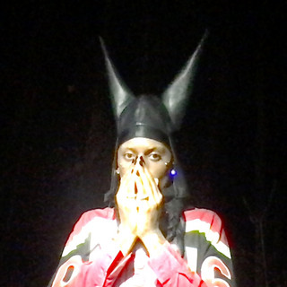

Playboi carti
Jordan Terrell Carter (Atlanta, 13 de setembro de 1996), mais conhecido como Playboi Carti, é um rapper, cantor,compositor e produtor musical americano.

Playboi carti
Carti assinou inicialmente com o selo underground local Awful Records, gravadora em que fez ele chamar a atenção de muitas pessoas importantes, uma dessas pessoas foi o estilista e modelo Ian Connor que apresentou Carti ao A$AP Rocky, ponta que lhe fez assinar com o selo AWGE da ASAP Mob pela Interscope Records. Depois de ganhar um culto de seguidores e fãs no início de sua carreira, Carti ganhou a atenção do público em 2017.